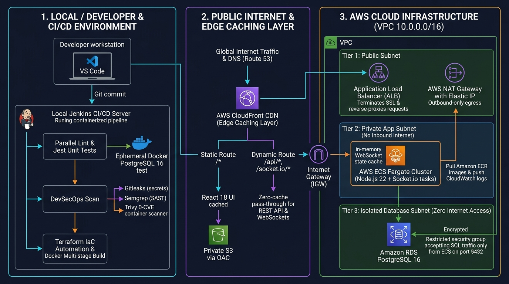
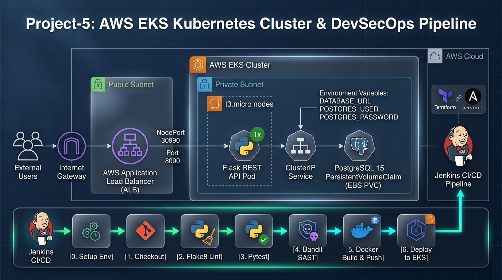
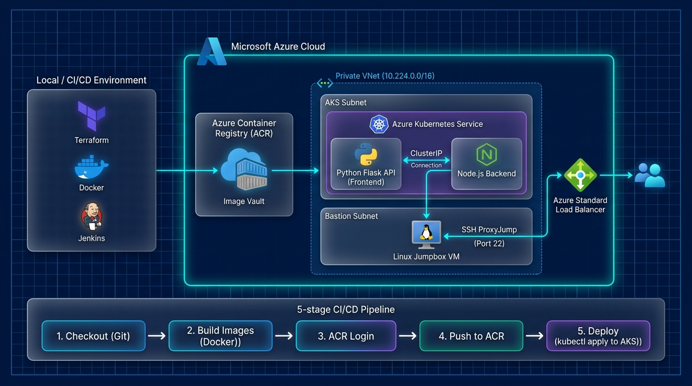
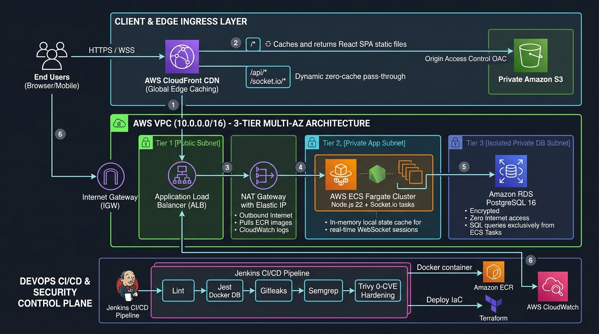

Architecting
Resilient Multi-Cloud & Automated CI/CD.
DevOps Engineer with 3+ years in enterprise production. Proven record migrating 200,000+ enterprise users, automating multi-tier AWS & Azure Kubernetes/Fargate clusters, and building automated security gates with 0-CVE hardened container images.
# 1. Terraform Multi-Cloud Infrastructure
$ terraform apply -auto-approve
✔ aws_vpc.main [10.0.0.0/16 Multi-AZ 6 Subnets]
✔ aws_nat_gateway.nat [Outbound Egress Gateway]
✔ aws_ecs_service.server [Fargate 2 Replicas]
✔ aws_cloudfront_distribution.cdn [WSS Proxying]
# 2. Ephemeral DB CI Testing & Security Scan
$ trivy image --severity HIGH,CRITICAL chandas-server:v5
✔ Scanned 120 packages. Total: 0 vulnerabilities found.
>> STATUS: ALL SECURITY CHECKS PASSED [READY]
Core Competencies
ECS, EKS, AKS, RDS, CloudFront, S3, VPC
Multi-Stage, ECR/ACR, Helm, VPC CNI
Modular HCL, Remote State, Playbooks
Declarative pipelines, Ephemeral DinD
Trivy, Semgrep, Gitleaks, Bandit
Shell automation, Linux internals, SQL
Professional Experience
DevOps Engineer
v), reducing release turnaround from 30+ to under 5 mins.
Trainee Engineer
Resume Summary & Education
Education
Professional Profile
DevOps Engineer with 3 years of production IT experience spanning infrastructure automation, Linux systems, cloud-native deployments, and enterprise environments.
Security & Compliance
Hands-on application security scanning, vulnerability assessments, and zero-trust IAM privilege boundaries.
Featured Infrastructure Projects
End-to-end cloud platforms with full Terraform IaC, Jenkinsfiles, Docker Multi-Stage builds, and documentation.
Project-6: Chandas Real-Time Collection Platform

Full-stack enterprise application (React 18 + Node.js 22 + Socket.io + PostgreSQL 16) deployed on AWS with zero-downtime rolling updates. Configured dual-origin CloudFront WSS reverse proxying to eliminate mixed-content errors and hardened Docker runtime to achieve 0 Trivy CVEs.
Jenkinsfile.ci
Quality Gates & Tests
Jenkinsfile.cd
4-Stage Automated Rollout
*.dkr.ecr.ap-south-1chandas-server tagged with ${BUILD_NUMBER} & latestaws ecs update-service --force-new-deployment zero-downtime rolling update/*)Jenkinsfile.ci triggers on PRs/commits for verification, while Jenkinsfile.cd triggers on release approval for automated cloud deployments (or unified end-to-end via Jenkinsfile).Project-5: Secure Banking 4-Tier Cloud Migration

Architected a progressive 4-phase enterprise evolution for a Python Flask REST API & PostgreSQL: Approach 1 (Docker Compose) → Approach 2 (EC2 + RDS Lift-and-Shift) → Approach 3 (EC2 Fleet via Ansible) → Approach 4 (AWS EKS Kubernetes Cluster with Terraform).
Project-Azure: Enterprise 2-Tier Architecture on Azure Kubernetes Service (AKS)

Engineered an end-to-end cloud-native 2-tier architecture deploying a high-availability Python Flask 2FA API (Frontend) communicating securely over Kubernetes CoreDNS to an isolated internal Node.js Signing Server (Backend). Entire infrastructure is provisioned declaratively with Terraform (Resource Groups, ACR, AKS, VNets, Subnets, and NSG Firewalls), coupled with a Jenkins CI/CD pipeline building, containerizing, and rolling out images without service interruption.
ProxyJump tunneling via ~/.ssh/config.
Production Cloud Architecture & Dataflow
Strict 3-tier segregation across Global Edge, Private Application Fargate, and Air-Gapped PostgreSQL storage.

Global Edge Caching & Proxy
Client requests enter through Route 53 and are terminated at AWS CloudFront CDN with dual-origin routing:
Private ECS Fargate & NAT
ALB routes sanitized traffic to Node.js & Socket.io containers in private subnets with zero public IP exposure:
Air-Gapped PostgreSQL 16
Multi-AZ RDS instance residing in isolated subnets with zero internet route, protected by strict security groups:
Automated 7-Stage DevSecOps Pipeline
Every pull request and build passes through 4 automated security gates before reaching production.
Jest + Ephemeral DB
Spins up an isolated PostgreSQL 16 container inside Docker-in-Docker to run full integration test suites without mock limitations.
Gitleaks Audit
Scans Git commit logs and codebase for exposed AWS keys, private tokens, and credentials, aborting the build immediately upon detection.
Semgrep SAST
Executes OWASP Top 10 security rule checks across JavaScript, Python, and Node.js source code to eliminate injection and auth vulnerabilities.
Trivy Hardening
Performs vulnerability assessments on Docker images. Multi-stage purge of runtime package managers achieves strict 0 High/Critical CVEs.